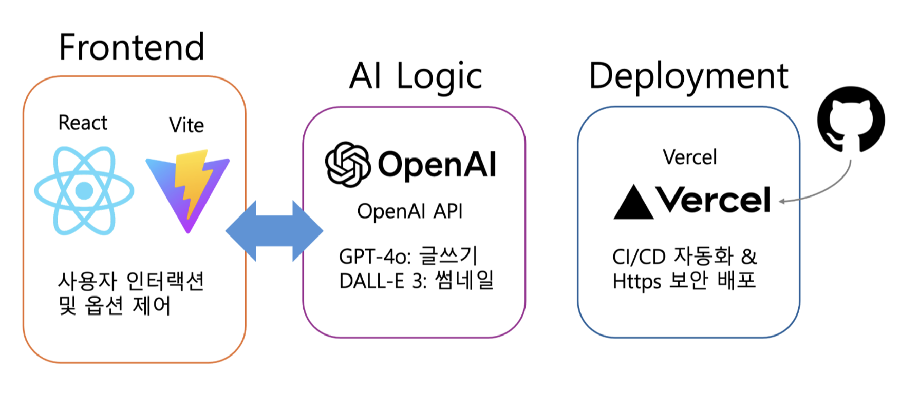

안정적이고 확장 가능한
웹 서비스를 만드는
개발자 박수현입니다.
React, TypeScript 및 AWS 클라우드 기술을 기반으로
AI 기술을 접목한 확장 가능한 웹 애플리케이션 개발에 주력합니다.
About Me
저는 React와 TypeScript를 활용하여 유지보수가 용이하고 타입 안정성이 보장된(type-safe) 견고한 아키텍처를 구축하는 데 강점이 있는 개발자입니다. 사용자에게 안정적인 경험을 제공하기 위해 선언적인 코드 작성과 효율적인 컴포넌트 설계에 깊은 관심을 두고 있습니다.
단순한 화면 구현을 넘어, AWS 클라우드 환경에 대한 이해를 바탕으로 백엔드 서비스와 유연하게 연동되는 확장 가능한(Scalable) 시스템을 설계합니다. 전체 서비스의 흐름을 이해하고 인프라까지 고려하는 개발을 지향합니다.
최근에는 생성형 AI 모델 API 연동 및 데이터 시각화를 통해 사용자 경험(UX)을 극대화하는 '지능형 웹 서비스' 구축에 주력하고 있습니다. 최신 기술을 빠르게 습득하여 실질적인 서비스로 구현해내는 것을 즐깁니다.
Skills
Frontend
Backend
DevOps & Tools
Main Project
DevLog.ai
개발자의 성장을 돕는 AI 글쓰기 파트너
프로젝트 시연 영상
😤 문제점 (Pain Point)
"코딩하기도 바쁜데 글은 언제 쓰지?"
개발자에게 기록은 필수지만, 시간 부족과 글쓰기의 막막함, 그리고 썸네일 디자인의 부담으로 인해 꾸준한 블로깅에 어려움을 겪고 있습니다.
💡 해결책 (Solution)
AI 기반 3단계 자동화 프로세스
키워드만 입력하면 초안 생성부터 윤문, 썸네일 제작까지 원스톱으로 해결하여 개발자의 기록 장벽을 획기적으로 낮춥니다.
시스템 아키텍처 & 주요 기능
- ✓ React & TS: 컴포넌트 기반 설계로 유지보수성 확보
- ✓ Serverless (AWS): Lambda, API Gateway를 활용하여 유휴 비용 최소화 및 AI API 효율적 연동
- ✓ Generative AI: 문맥 인식 프롬프트 엔지니어링을 통한 고품질 초안 및 이미지 생성

프로젝트 성과 및 사용자 평가
본 평가는 실제 서비스 사용자 25명을 대상으로 진행한 정량/정성 평가 결과입니다.
User Satisfaction Metrics
Real User Feedback
"개발자에게 참 어려우면서도 필수적인 글쓰기를 AI가 대신 해준다는 점이 훌륭합니다. 특히 구조화된 마크다운 변환 기능이 인상적입니다."
"서버 없이 프론트엔드와 AWS Lambda만으로 이런 완성도 높은 서비스를 구현했다는 것이 기술적으로 인상적입니다."
"평소 블로그 작성에 부담을 느꼈는데, 이 문제를 해결해 줄 수 있는 꼭 필요한 서비스라고 생각합니다."
"맞춤형 서비스와 개발자의 니즈를 정확히 파악한 창의력 있는 아이디어입니다."